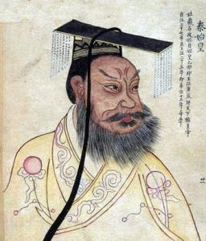

politics
First emperor
Before Qin Shihuang, the governors of various countries were called "kings" or "kings". In the late Warring States period, Qin and Qi were once called "emperors", but the title was not the same at that time. Qin Shihuang, who ruled the whole country, thought that these titles were not enough to show his respect, so he ordered the ministers to discuss the titles. After some discussion, the prime minister Wang wan, the censor feng Jie, tingwei Reese and others believed that Qin Wang Zheng had "promoted the righteous army, put down the remnant thieves and pacify the world" and had achieved "nothing since ancient times, which the five emperors could not match". They quoted the traditional honorific title, saying that "there was an emperor in ancient times, Dihuang, Tai Huang and Tai Huang were the most expensive" and suggested that Qin Wang Zheng adopt the title of "Tai Huang". However, Qin Shihuang was not satisfied with this. He only used the word "emperor" and created the title of "emperor" by adding the word "emperor" under the word "three emperors and five emperors". Since then, "emperor" has become the title of the highest ruler in China's feudal society.
Qin Shihuang became the first emperor in Chinese history, calling himself "the first emperor". He also stipulated that when the throne was passed on to his descendants after his death, the successors would be called the second emperor, the third emperor and even all generations. Qin Shihuang wanted the throne to be inherited by his family forever, "and it was spread endlessly." In order to sanctify the emperor's position, Qin Shihuang took a series of measures to respect the emperor.：
first of all, we will cancel the writings.finally .. Postscript originated in the early Zhou Dynasty and was given a title of evaluation after the death of the king according to his life story. However, Qin Shihuang believed that it was unreasonable and meaningless to "discuss the father with the son and the king with the minister". He announced the abolition of the writings.finally, he did not allow future generations of officials to evaluate themselves.
the next emperor called himself "I". The word "I" has the same meaning as "I" and was used by ordinary people before, but Qin Shihuang limited that only the emperor could call himself "I". The emperor's order is called "system" or "imperial edict" (life is called system, order is called imperial edict, cover the two effect order is different also).
third, the emperor's name is not allowed to be mentioned in the text, so avoid it. When words such as "emperor" and "first emperor" are written on the document, they are written in a separate line.
finally, only large seals carved in jade and used by emperors can be called "seals".
Military
Unifies six countries
(1) destroy south Koreasouth Korea is the weakest among the six countries, but its geographical position is the biggest obstacle to the unification of Qin. the first choice of Qin Shi Huang is south Korea. However, Qin Jun repeatedly attacked South Korea and was repelled by South Korea. While attacking South Korea with its main force, Qin adopted a strategy of fostering pro-Qin forces to gradually dismember South Korea. In 231 years ago, Teng, the "fake governor" (i.e. acting governor) of Nanyang county, south Korea, gave Qin the territory under his jurisdiction. Teng was appointed as an official by Qin Wang Zheng and later sent him to lead an army to attack South Korea. Teng knew South Korea like the back of his hand, so it went smoothly. He captured Han Wang in the 17th year of Qin Wang's reign (230 years ago) and South Korea perished.
(2) destroy Zhao GuoIn 229 years ago, Qin took advantage of the great earthquake and famine in Zhao and sent Wang Jian to lead the troops to attack Zhao. Zhao sent Li Mu and Sima Shang to lead the troops to resist. The two sides had been at loggerheads for a year. Qin resorted to separation.

Wang Jian paid off Guo Kai, the king of Zhao's favorite, with a large sum of money to spread rumors that Li Mu and Sima Shang were trying to conspire. Zhao Wang believed the rumors and sent Zhao Cong and Yan Ju to replace Li Mu. Li Mu refused to give up his military power under the current situation. Zhao Wang secretly sent someone to arrest Li Mu and kill him. At the same time, he also killed Sima Shang. Killing Li Mu undoubtedly cleared the way for the death of Zhao by Qin Jun. Since then, Qin Jun has entered an uninhabited territory and has taken up some territory.
In the 19th year of Qin Wang Zheng's reign (228 years ago), Qin Jun breached Handan. Soon after, the fleeing Zhao Wang was forced to land in Qin. Zhao actually perished. However, Gongzijia took a group of people to Daijun (Wei County, Hebei Province) and made himself king. Post-Qin Jun captured Yan State after it was destroyed in 222 BC. At this point, Qin unified the north.
(3) destroy the state of Weiin the first 231 years, king Wei jingshi was forced by the powerful state of Qin to offer Li yi to the state of Qin in order to slow down the army. At this time, Qin Wang Zheng was mobilizing his troops to launch a general attack on Zhao. He did not want to disperse his troops to attack Wei and accepted the offer. This enabled the state of Wei to maintain the situation for several more years.
In the 22nd year of Qin Wang Zheng's reign (225 years ago), just as Qin Jun's main force was moving south to attack Chu, Qin Wang Zheng sent a young general, Wang Ben, to lead the army to besiege Weidu Daliang (Kaifeng, Henan Province). Wei Jun closed the gate and could not hold out. As the city defense of Daliang was extremely strong after years of construction, Qin Jun was unable to storm it. Wang Ben came up with a way to attack with water. A large number of soldiers in Qin Jun were arranged to dig channels to draw water from the Yellow River and the chasm and pour it into the girder. Three months later, all the wall barriers of the girder collapsed and Wei Wangjia had to surrender. The state of Wei has perished.
(4) destroy Chu stateChu has a vast territory and rich products, claiming to have a million soldiers. However, Chu always had nobles fighting for power and profits, which was especially serious at the end of the Warring States Period. In 226 years before the Yuan Dynasty, Qin Wang Zheng lost no time to transfer Qin Jun from the front line of cutting Yan in the north to attack Chu in the south, winning more than 10 cities of Chu in a row. In 224 years ago, the decisive battle between the state of Qin and the state of Chu began. Qin Wang Zheng sent young general Li Xin to lead 200,000 Qin Jun to attack Chu and was defeated by the Chu army. Later, General Wang Jian was sent to lead 600,000 Qin Jun to attack Chu. After entering Chu territory, Wang Jian did not launch an offensive immediately. He summed up the lesson of Li Xin's aggressive underestimation of the enemy. He adopted the strategy of stationing troops to practice martial arts. He could not build up a solid wall, paralyzed the enemy, and waited for work at ease. After more than a year, Qin Jun basically adapted to the situation in Chu, with high morale and abundant physical strength. At the same time, Chu troops deployed to fight against Qin Jun gradually relaxed their fighting spirit and were prepared to return to the east due to lack of grain and fodder. As soon as ChuJun withdrew, Wang Jian seized the opportunity to order the whole army to attack. Qin Jun defeated the main force of the Chu army at one stroke and marched straight into the mainland, killing Xiang Yan, commander of the Chu army.
In the 24th year of Qin Wang Zheng's reign (223 years ago), Qin Jun captured Shouchun, the capital of Chu (Shouxian County, Anhui Province), captured the king of Chu and destroyed Chu. In the twenty-five years (222 years ago) of the reign of king Qin, the army that had just destroyed Chu in the south took advantage of the victory to subdue yue jun and set up huiji county. As a result, the Yangtze River basin was completely incorporated into the territory of the Qin Dynasty.
(5) destroy Yan kingdomin the process of destroying Zhao, the Qin army had arrived at the Yan border. The prince was pleased to see that Qin had wiped out the three Jin dynasties and would kill himself, but there was nothing he could do. Yan Taizi Dan came up with Jing Ke to assassinate the king of Qin. The assassination failed. Qin Wang Zheng almost died under Jing Ke's dagger and immediately sent more troops to attack on a large scale. In 226 years ago, when Qin Jun captured Yan Dou Ji (Beijing), Prince Xi and Taizi Dan fled to Liaodong County. Qin Jiang Li Xin led thousands of people in Qin Jun to chase Taizi Dan to Yanshui. Taizi Dan survived by hiding in the water. Later, after weighing the interests, the prince Xi sent someone to kill Taizi Dan and present his head to Qin state, hoping to find a truce and keep Yan state from dying. After the prince xi fled to liaodong, Qin Jun's main force was transferred to the south line to attack chu.
In 222 years ago, Wang Ben was ordered to attack the remnants of the Yan State in Liaodong and capture the Emperor Xi. The Yan State was completely destroyed.
(6) destroy qiIn the 26th year of Qin Wang Zheng's reign (221 years ago), Qin Wang Zheng ordered Wang Ben to march southward to attack Qi, the last of the six eastern countries. From the Spring and Autumn Period to the middle of the Warring States Period, Qi was a relatively strong one among Shandong countries. However, Yan, Zhao, Han, Wei and Chu attacked Qi in 284 years ago, especially Yan swept Le Yi across Qi, which nearly destroyed Qi. Since then, Qi has not recovered. Moreover, at this time, Qi Wang Jian is an incompetent person.
249 years ago, he became prime minister. Qin State quickly began to buy off the insiders and gave away a large amount of gold and jade. After winning the favor of Qin, he sent a large number of guests to Qin one after another. The State of Qin also paid them bribes and sent them money and treasures to return to the State of Qi to act as internal agents. After returning from Qin, these people actively created pro-Qin public opinion. They said that Qi Wang Jian should go to the Qin Dynasty in the west to show his allegiance, and that Qi Qin was in-laws. He did not need to prepare for the Qin Dynasty, nor should he help Sanjin, Yan and Chu to attack the Qin Dynasty. It is in this case, Wang Ben south cutting qi, almost did not encounter any resistance. Wang Ben led his army to Linzi. Qi Wang Jian and Hou Sheng surrendered to Qin immediately. Qi perished.
so far, Qin has completed the final process of eliminating the hordes and unifying the six countries.